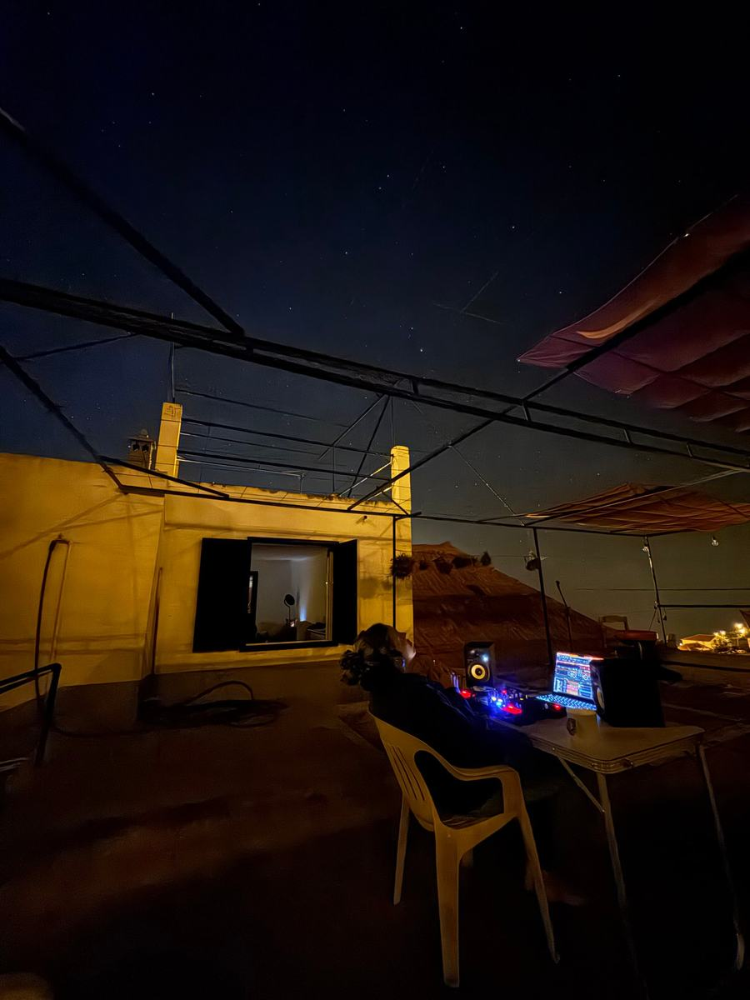
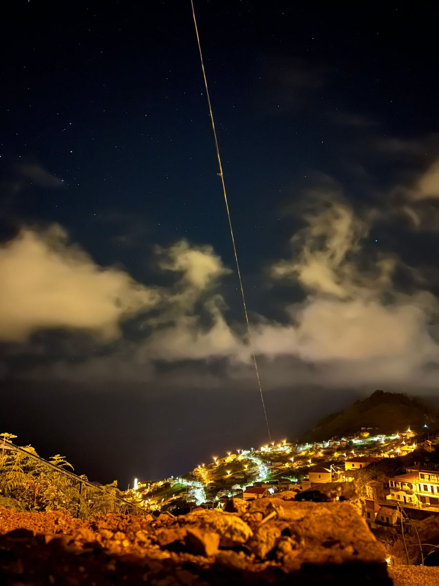
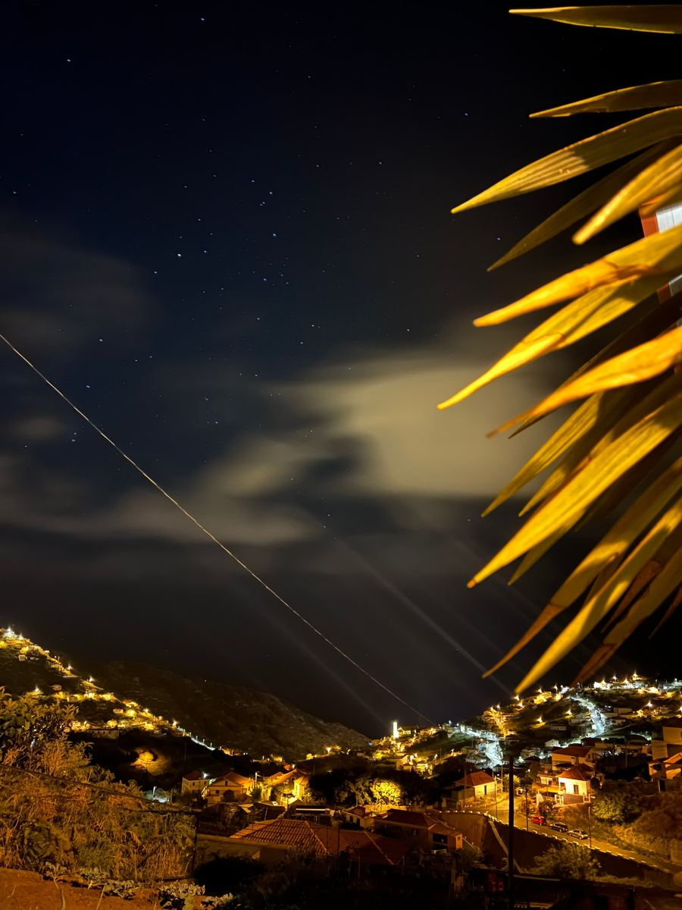
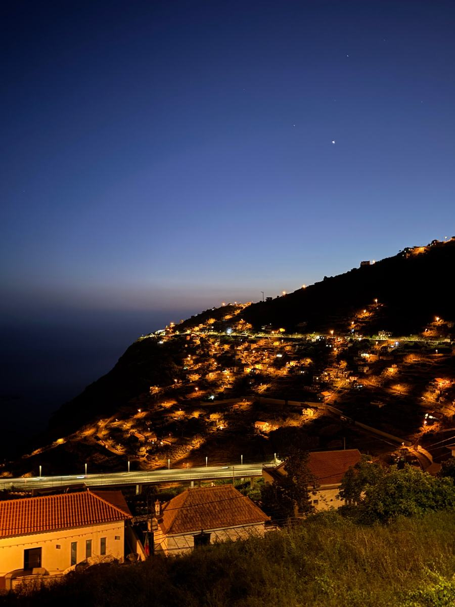
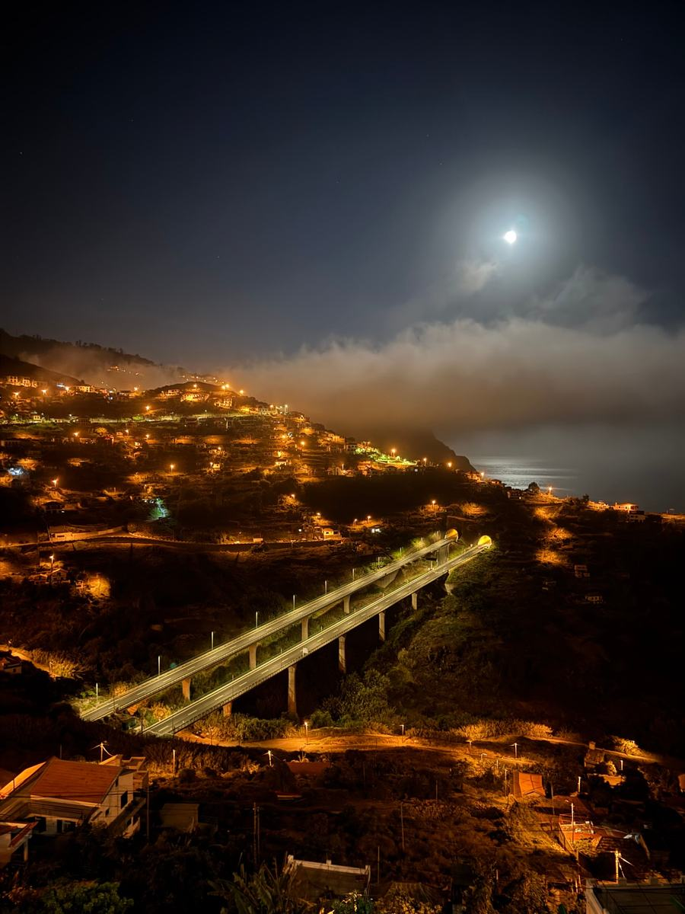
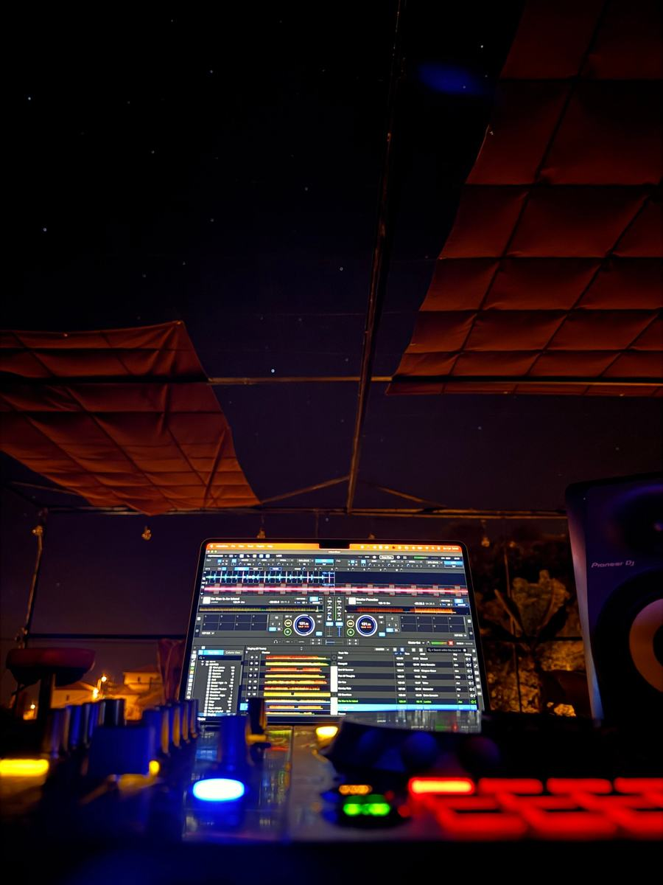
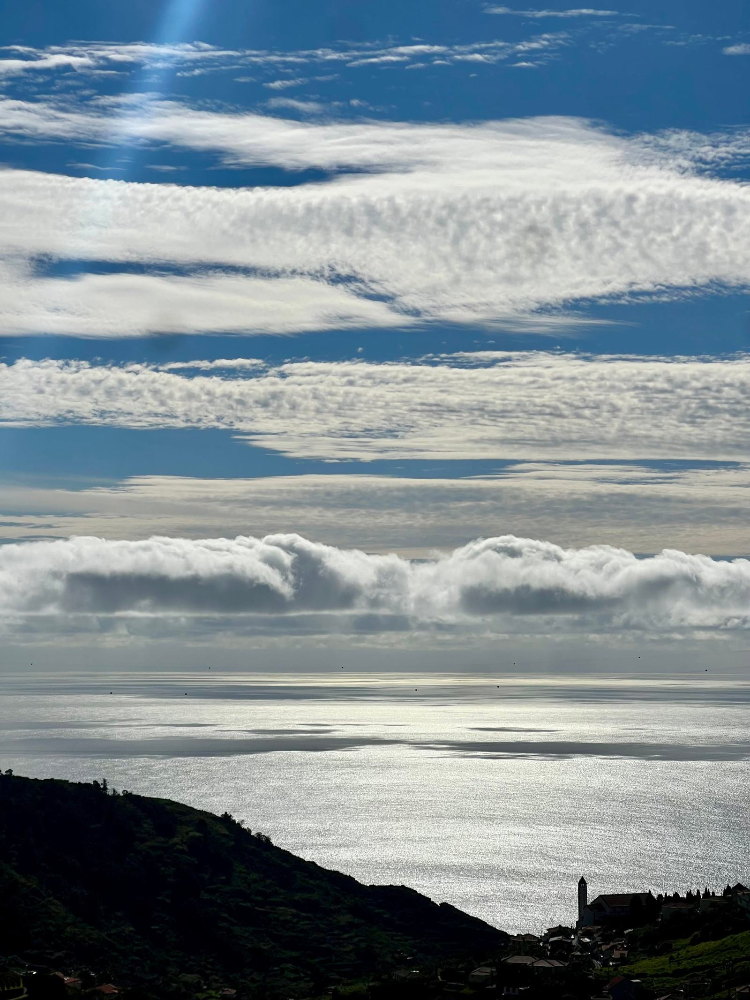

Als de zon ondergaat
Muziek in huis
Op Madeira staat een mobiele DJ-set klaar. Die zetten we neer waar het feestje is: beneden in huis, of boven op het dak onder de sterren.
Zin om zelf muziek te maken? Dat kan! Beneden zit de Cozy Cotton Lounge, de bluesclub van mijn vader. Hij organiseert er feesten en vindt het echt superleuk om jullie te ontvangen.
Ik kan niet wachten om samen muziek te maken. Het is het allerleukste wat er is, en dat te delen in deze tropische omgeving… echt een droom.
Alvast in de vibe komen? Deze sets heb ik op Madeira opgenomen.










